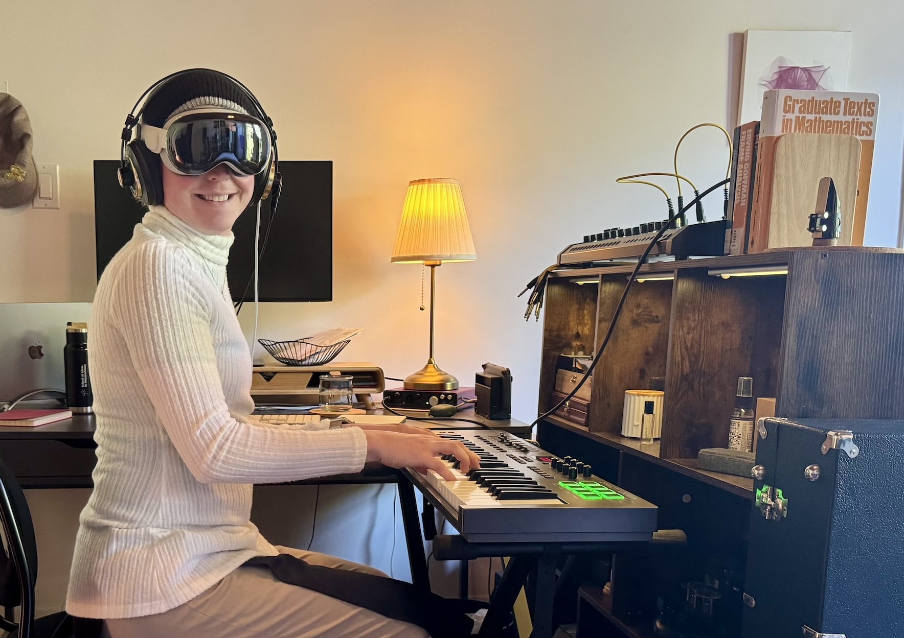

Maxine Levesque, PhD
is a physician-scientist in training. She uses math to study the relational architecture of mind, in all its amazing forms. She is building a world where we can freely make sense of the Universe together—for the benefit of all.

Education
PhD · 2020 – 2025
MD · 2018 – 2020 | 2026 – 2028 (expected)
University of California, San Francisco
Medical Scientist Training Program · Neuroscience Graduate Program · Weill Fellow
Dissertation: “Toward general world models” (under embargo)
BS · 2011 – 2015
Johns Hopkins University
Primary major in Biomedical Engineering · Second major in Mathematics · Minor in Applied Mathematics and Statistics · Michael Bloomberg Scholar
Professional experience
Scientific consultant · 2025 – present
I work with clients on scientific strategy and due diligence for revolutionary projects at the frontiers of human knowledge, lending expertise in neurotech, mental health, AI, and scientific infrastructure.
consulting [at] maxine [dot] science
Software contributions
bci2000web
Enable control of and access to real-time neural data from BCI2000 over WebSockets.
bci2k.js ·
Stream neural data to your browser.
webfm
A suite for real-time functional mapping of task-related brain activity on the web.
Research experience
Independent work
I use applied category theory1 as a framework to understand systems’ internal world models — as well as those world models’ interactions and dynamics — in a substrate-independent way.
1 The mathematical study of what can be understood from the architecture of interrelationships between things.
Abbasi Lab @ UCSF · 2023 – 2025
I study how the world-understanding of generative AI can be used to characterize the diversity of human mental life, as well as how individuals’ mental health changes over time.
Poskanzer Lab @ UCSF · 2020 – 2025
I used mathematical tools to understand how astrocytes — the understudied “glue” cells that make up ⅓ of the brain — are able to compute, how astrocytes and neurons co-regulate each other’s dynamics, and how this might impact human health.
Crone Lab @ JHU · 2012–2018
I studied how information flow in the human brain rapidly changes during movement and speech.
I also architected a platform for data collection and personalized ML model training / deployment for a EpiWatch, a biosensor-driven seizure detection app running on Apple Watch.
Hong Lab @ Tsinghua University · 2013
I built an international collaboration, as part of the Tsinghua–Johns Hopkins Joint Institute for Biomedical Engineering Research in Beijing, in order to apply research methods I was developing on dynamic information flow at JHU to human intracranial brain recordings collected at Tsinghua.